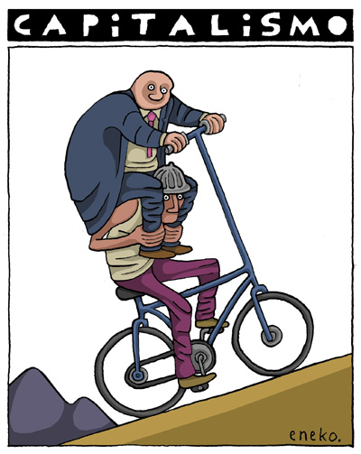

Seguramente habrás escuchado que el capitalismo es el sistema que a más gente ha sacado de la pobreza,
para justificar que debemos seguir con él.
Cuánto se tardaría con la tendencia actual en llegar a ese 0 de pobreza? Según el informe de world
economice associatio, si ponemos el umbral en 1,25 al día, se tardarían 100 años, con 5 al día, 200
años.
Decir que lo que hay que hacer es esperar que el sistema arregle la propia pobreza que ha generado, implica
que vives en la comodidad de estar por encima de ella.
Para acabar con la pobreza mundial con este sistema, habría que hacer crecer la economía mundial 15 veces
el tamaño que tiene hoy (1,25) para 5, serían 173 veces. Sería aumentar 173 veces la producción actual,
cuando ya estamos sobrepasando los límites físicos del planeta.
Otra causa es la desigualdad. Se publicó un informe que decía que el 1 más rico de la población poseía
ya más del 50 de la riqueza mundial, acumulando este más riqueza que el 99 restante. Los 42 tipos más
ricos tienen la misma riqueza que los 3700 millones de personas más pobres.
En la logica actual del capitalismo, las personas más pobres se quedan con las migajas de lo que produce el
sistema.
Acabar con el capitalismo no significa volver a las cabernos, significa acabar con la apropiación de la
riqueza por parte de los más ricos, con la condena a vivir en la pobreza para millones de personas por más
de 200 años.
"Lo que ha hecho el capitalismo ha sido “sacralizar” el dinero. Como cultura sentimos que necesitamos dinero
por encima de
necesitar cuidados, agua, alimentos o casa. El derecho a una vida digna y fuera de la pobreza debe ir por
delante de la generación de riqueza. Ahora mismo, en este sistema, el crecimiento de unos países implica
la miseria de otros. “Lo que llamamos “mundo rico” ha sido un proceso en el cual algunos sectores
privilegiados mediante procesos coloniales y neocoloniales, extraen, explotan los trabajos, los tiempos y
los recursos de otros lugares, dejando a las personas que viven en ellos en situaciones comprometidas o de
pobreza”. (Discurso Yayo Herrero G7 EZ)
JOSEP MANEL BUSQUETA en L'hora dels voltors: “las personas que habitan una cuarta parte del mundo, con su
consumo desmesurado, son las responsables de la insuficiencia material de las otras tres cuartas partes".
ANTONIO MOLINA: "Hasta que Milton Friedman, uno de los padres del neoliberalismo económico, profetizó que
había que conseguir que lo po- líticamente imposible, fuera políticamente inevitable. ¿Cómo se logra que
una situación de depauperación y explotación extrema de las mayorías sociales se convierta en elemento
constitutivo del sistema sin que signifi- que la ruptura de la convivencia mediante el conflicto social?
Aplicando la teoría de Friedman, es decir, haciéndola inevitable. ¿Hay salida democrá- tica a este
embrollo o se consolidará el sometimiento de la ciudadanía al discurso que afirma que fuera de la
ortodoxia económica no hay salvación?
La exhaustiva privación del trabajo produce salarios por debajo de la subsistencia, la supresión o
constricción de los subsidios a los parados, la precariedad de los escasos empleos, y con ello, la
marginación y la exclusión social de los trabajadores. Es la expropiación de los pobres por parte de los
ricos. Por ello, resulta difícil explicar que se degrade el modo de vida de una población tan vulnerable
como los ancianos me- diante el recorte de las pensiones. No después de haber visto durante la crisis cómo
miles de millones sí se podían gastar en rescatar bancos, autopistas o entidades sanitarias privadas,
aumentar el gasto en defen- sa y anunciar rebajas de impuestos milmillonarias. Como consecuencia, estamos
ante un sistema en el cual el crecimiento económico crea ricos, pero no riqueza o riqueza sólo para los
ricos y pobreza para el resto.
Las fortunas de los más ricos del país, que apenas suponen un 0,34% del censo, pasaron a resultar
equivalentes al 57% de la riqueza nacio- nal, cuando siete años antes esa relación se quedaba en el 40%.
Podría parecer que algo no funciona en los engranajes del sistema español de redistribución de rentas,
pero en realidad, sí funciona, es la desigualdad como ideología. Los niveles de pobreza en España
reflejan una decisión política. Esa decisión política ha sido hecha durante la última década. Hay que
resaltar el hecho de que entre 2007 y 2017, los ingresos del 1% más rico crecieron un 24% mientras que para
el 90% restante subieron menos de un 2%”. Al mismo tiempo, el Estado español optó por recau- dar un 5%
menos de impuestos que cualquier otro Gobierno europeo y eso, claro, significa que tiene menos dinero para
gastar en protección social. Entre las causas del endeudamiento creciente del sector público está una
presión fiscal, inferior a la media europea y de carácter más regresivo que antes, que no ha sido
suficiente para financiar los gastos e inversiones públicas. Cabe entonces reflexionar sobre el papel de la
deuda pública y acerca de dónde está realmente el problema".
